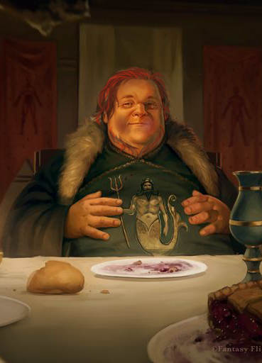
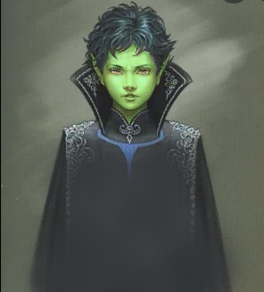
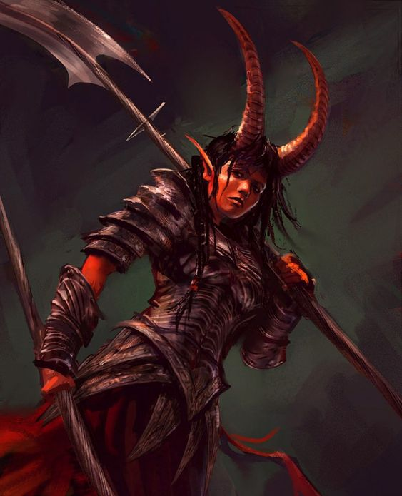

Personagens conhecidos na Ilha Fantasma
Lothar "Cinzento" Helmut III
Barão
Raça: Humano
Localização: Castelo Mausoléu
Descrição:
O Barão Cinzento, (como era conhecido) governou a Ilha Fanstama com mãos de ferro por mais de 60 anos. Apesar de ser extremamente preconceituoso com raças diferentes da sua, Helmut pode gabar-se de possuir uma extensa coleção de artefatos de todos os tipos e lugares e com a intenção de aumenta-la, convocou um grupo de aventureiros para recuperar um artefato ancestral a muito desaparecido.
Gruduniel Cra'ale
Desconhecida
Raça: Elfo
Localização: Desconhecida
Descrição: Pouco sabe-se desse misterioso elfo a não ser que chegou em Ilha Fantasma no Assombração (a embarcação de viagens da Ilha Fantasma) no mesmo dia que o grupo de aventureiros convocados pelo Barão Cinzento. Quando acharam o Capitão da Guarda do Barão morto com uma adaga de lâmina esverdeada, todas as suspeitas cairam sobre Gruduniel. Porém, na manhã seguinte o mesmo já havia desaparecido, e por conhecidência ou não, a Placa Rúnica, o artefato mais valioso do Barão também havia sumido.

Vardis Magrelo
Cozinheiro do Assombração
Raça: Humano
Localização: Assombração, Mar do Sul
Descrição: A tripulação do Assombração alimenta boatos de que os cabelos e a barba de Vardis são tão oleosos que seria possível fritar uma duzia de peixes (alguns vão mais além e dizem que é exatamente isso que ele faz, dado o gosto das suas refeições). Eles deram o maldoso apelido de "magrelo" ao cozinheiro, mas é inegavel que todos os tripulantes do navio de viagem do Barão Cinzento cultivam uma grande admiração pelo cozinheiro, começou seu trabalho alí quando ainda merecia o apelido que lhe deram.

Limão
Serviçal
Raça: Elfo
Localização: Castelo Mausoléu
Descrição: Embora seja sabido por todos que o pequeno Limão nasceu dentro das muralhas do Mausoléu, pouco se sabe sobre a ascendência do garoto. Suspeita-se que Lothar Helmutt II, pai do Barão Cinzento mantinha uma elfa como serviçal e esta teria gerado Limão pouco antes de morrer. (Aqueles que têm corajem ousam supor que o garoto pode ser fruto da semente de Helmut II, e por isso não foi expulso do castelo pelo Barão Cinzento, mas não há como ser verdade devido a idade do garoto). O fato é que Limão serve ao Barão Cinzento desde o dia de seu nascimento (embora seja humilhado pelo Barão diariamente), e conhece todos os cantos do castelo. E há quem diga que o garoto só permanesce no castelo por que faz parte da coleção do Barão.
Andvar
Ladrão profissional
Raça: Anão
Localização: Ilha Fantasma (morto)
Descrição:Andvar foi um dos convocados pelo Barão Cinzento para uma missão de recuperação de um artefato ancestral. Não se sabe muito a respeito do anão, apenas que foi preso e morto pelos guardas do Barão Cinzento um dia depois de chegaro ao castelo. Deixou apenas um bode, que foi abatido e cozido poucos dias após sua morte.

Nieredith Bielluise
Bárbaro
Raça: Tiefling
Localização: Ilha Fantasma (morto)
Descrição:A mais agressiva e encrenqueira do grupo convocado pelo Barão Cinzento para a missão de recuperação do artefato, porém foi morta antes mesmo de por os pés em terra firme após entrar em um sangrento combate com 6 dos tripulantes do Assombração.